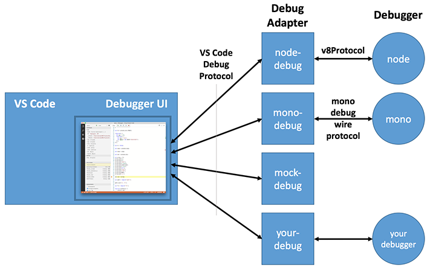

The VS Code Debug Protocol
Since Visual Studio Code implements a language agnostic debug UI, it does not communicate directly with real debuggers
but instead talks to so-called debug adapters through an abstract wire protocol, the VS Code Debug Protocol.

Extensibility of the debug component of VS Code is currently limited to adding new debug adapters.
So it is not (yet) possible to extend the debugger UI in similar ways as for example the editor component of VS Code.
Debug Adapter
A debug adapter is a standalone executable that talks to a real debugger and translates between the
VS Code Debug Protocol and the concrete protocol of the debugger. Since a debug adapter can be implemented in the language that is best suited or a given debugger or runtime, the wire protocol is more important than the API of a particular client library that implements
that protocol.
You can find the VS Code Debug Protocol specification expressed as a JSON schema or as a (generated) TypeScript definition file in thevscode-debugadapter-node repository.
Both files show the detailed structure of the individual protocol requests, responses and events.
The protocol is also available as the NPM module vscode-debugprotocol.
We have implemented client libraries for the VS Code Debug Protocol in TypeScript and C#, but only the JavaScript/TypeScript client library is already available as an NPM module vscode-debugadapter-node. You can find the C# client library in the Mono Debug repository.
The following debugger extension projects can serve as examples for how to implement debug adapters:
| GitHub Project | Description | Implementation Language |
|---|---|---|
| Node Debug | The built-in v8-based Node.js debugger | TypeScript/JavaScript |
| Node Debug2 | The built-in CDP-based Node.js debugger | TypeScript/JavaScript |
| Mono Debug | A simple C# debugger for Mono | C# |
| Mock Debug | A ‘fake’ debugger | TypeScript/JavaScript |
The VS Code Debug Protocol in a Nutshell
In this section we give a high-level overview of the interaction between VS Code and a debug adapter.
This should help you in your implementation of a debug adapter based on the VS Code Debug Protocol.
When a debug sessions starts, VS Code launches the debug adapter executable and talks to it through stdin and stdout. VS Code sends an initialize request to configure the adapter with information about the path format (native or URI) and whether line and column values are 0 or 1 based.
If your adapter is derived from the TypeScript or C# default implementation DebugSession, you don’t have to handle the initialize request yourself.
Depending on the ‘request’ attribute used in the launch configuration created by the user, VS Code either sends a launch or an attach request.
For launch the debug adapter has to launch a runtime or program so that it can be debugged.
If the program can interact with the user through stdin/stdout, it is important that the debug adapter launches the program in an interactive terminal or console.
For attach the debug adapter has to attach or connect to an already running program.
Since arguments for both requests are highly dependent on a specific debug adapter implementation, the VS Code Debug Protocol does not prescribe any arguments. Instead VS Code passes all arguments from the user’s launch configuration to the launch or attach requests.
A schema for IntelliSense and hover information for these attributes can be contributed in the package.json of the debug adapter extension. This will guide the user when creating or editing launch configurations.
Since VS Code persists breakpoints on behalf of the debug adapter, it has to register the breakpoints with the debug adapter when a session starts.
Since VS Code does not know when is a good time for this, the debug adapter is expected to send an initialize event to VS Code
to announce that it is ready to accept breakpoint configuration requests.
VS Code will then send all breakpoints by calling these breakpoint configuration requests:
- setBreakpoints for every source file with breakpoints,
- setFunctionBreakpoints if the debug adapter supports function breakpoints,
- setExceptionBreakpoints if the debug adapter supports any exception options,
- configurationDoneRequest to indicate the end of the configuration sequence.
So don’t forget to send the initialize event when you are ready to accept breakpoints. Otherwise persisted breakpoints are not restored.
The setBreakpoint request sets all breakpoints that exist for a file (so it is not incremental).
A simple implementation of this semantics in the debug adapter is to clear all breakpoints for a file and then set the breakpoints specified in the request.
setBreakpoints and setFunctionBreakpoints are expected to return the ‘actual’ breakpoints and VS Code updates the UI dynamically if a breakpoint could not be set at the requested position and was moved by the debugger backend.
Whenever the program stops (on program entry, because a breakpoint was hit, an exception occurred, or the user requested execution to be paused),
the debug adapter has to send a stopped event with the appropriate reason and thread id.
Upon receipt VS Code will first request the threads (see below), and then the stacktrace (a list of stack frames) for the thread mentioned in the stopped event.
If the user then drills into the stack frame, VS Code first requests the scopes for a stack frame, and then the variables for a scope.
If a variable is itself structured, VS Code requests its properties through additional variables requests.
This leads to the following hierarchy:
|
The VS Code debug UI supports multiple threads (but you are probably not aware of this if you are only using the Node.js debugger). Whenever VS Code receives a stopped or a thread event, VS Code requests all threads that exist at that point in time and displays them if there are more than one. If only one thread is detected, the VS Code UI stays in single thread mode. Thread events are optional but a debug adapter can send them to force VS Code to update the threads UI dynamically even when not in a stopped state.
After a successful launch or attach VS Code requests the baseline of currently existing threads with the threads request and then starts to listen for thread events to detect new or terminated threads. Even if your debug adapter does not support multiple threads, it must implement the threads request and return a single (dummy) thread. The id of this thread must be used in all requests where a thread id is required, e.g. stacktrace, pause, continue, next, stepIn, and stepOut.
VS Code terminates a debug session with the disconnect request.
If the debug target was ‘launched’ disconnect is expected to terminate the target program (even forcefully if necessary).
If the debug target has been ‘attached’ initially, disconnect should detach it from the target (so that it will continue to run).
In both cases and in the case that the target terminated normally or crashed the debug adapter must fire a terminated event.
After receiving a response from the disconnect request, VS Code will terminate the debug adapter.
Next Steps
To learn more about VS Code extensibility model, try these topics:
- Example Debuggers - See a working ‘mock’ debugger example
- Extension API Overview - Learn about the full VS Code extensibility model.
- Extension Manifest File - VS Code package.json extension manifest file reference
- Contribution Points - VS Code contribution points reference